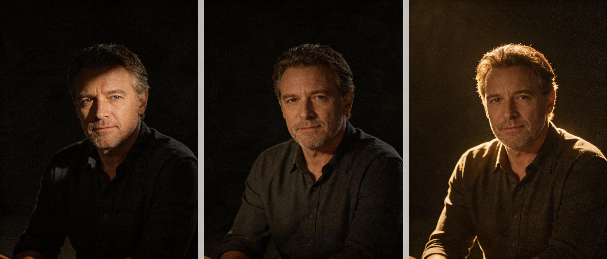
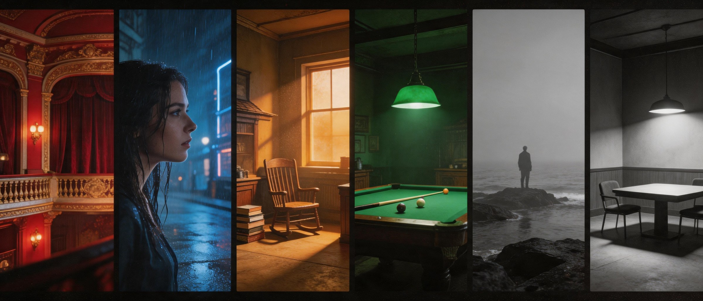

从"会拍"到"会设计"。这一章你将不再追逐镜头,而是开始编排画面里的一切:构图、光影、色彩、走位。
画面是一个有限的世界。每一寸位置都有重量。把人放在哪里,就是把他放在世界中的哪里。
把画面横竖各分三份,人物或地平线放在交叉点。最基础的"舒适感"。
路、栏杆、视线、光束——指引观众的眼睛走向重点。深焦摄影的引导利器。
用门、窗、镜子框住主体。强化困境、被观察感、距离感。
大面积留白。表现孤独、空虚、未知。东方水墨美学的电影化。
头顶留多少决定情绪。压顶=压抑,留多=自由。简单却被滥用。
斜线带来运动、不稳、张力。常用于动作戏与失衡时刻。

光是电影的第一颜料。它不只是让画面"看得见",而是规定了画面如何被感受。同一张脸,在三种光下,是三个灵魂。
"这场戏的光,从何而来?为什么?"——回答不出来,光就还没设计好。
色彩在观众识破之前就已经说了话。它绕过逻辑,直抵情绪。色板的设计,即是情感的剧本。
不要孤立用色,要建立色板系统:① 角色色(谁穿什么);② 段落色(每幕主色);③ 对立色(冲突双方的反差)。

Mise-en-scène,字面意思"放到场景里"。它指画面框内所有的视觉元素及其安排——演员位置、走位、布景、道具、服装、光线、构图——综合作用。
"场面调度,就是导演把整个世界压进一个画面的方式。"
—— 法国电影手册派调度的高级在于:不靠剪辑就完成叙事。一个镜头里,人物走位、画面纵深、视线流动、道具触发——一切自带节奏。这是电影最难、最电影的部分。